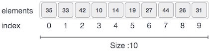
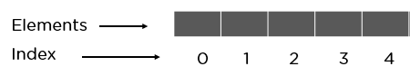
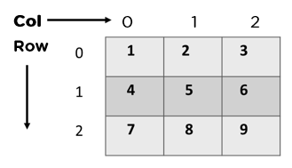
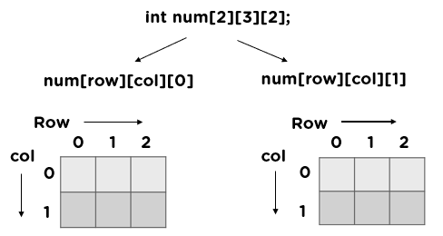
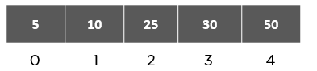
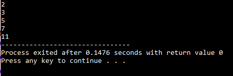

An array is a linear data structure.Arrays are defined as the collection of similar types of data items stored at contiguous memory locations. The idea is to store multiple items of the same type together in one place. It allows the processing of a large amount of data in a relatively short period. It is one of the simplest data structures where each data element can be randomly accessed by using its index number.The first element of the array is indexed by a subscript of 0. There are different operations possible in an array, like Searching, Sorting, Inserting, Traversing, Reversing, and Deleting.Following are the important terms to understand the concept of Array.
Element − Each item stored in an array is called an element.
Index − Each location of an element in an array has a numerical index, which is used to identify the element.
Characteristics of an Array:
An array has various characteristics which are as follows:
Arrays use an index-based data structure which helps to identify each of the elements in an array easily using the index.
If a user wants to store multiple values of the same data type, then the array can be utilized efficiently.
An array can also handle complex data structures by storing data in a two-dimensional array.
An array is also used to implement other data structures like Stacks, Queues, Heaps, Hash tables, etc.
The search process in an array can be done very easily.
Applications of an Array:
Different applications of an array are as follows:
An array is used in solving matrix problems.
Database records are also implemented by an array.
It helps in implementing a sorting algorithm.
It is also used to implement other data structures like Stacks, Queues, Heaps, Hash tables, etc.
An array can be used for CPU scheduling.
Can be applied as a lookup table in computers.
Arrays can be used in speech processing where every speech signal is an array.
Real-Life Applications of Array:
An array is frequently used to store data for mathematical computations.
It is used in image processing.
It is also used in record management.
Book pages are also real-life examples of an array.
It is used in ordering boxes as well.
Why Do You Need an Array in Data Structures?
Let’s consider the situation where we need to get 10 student’s age and store it for some calculation.
Since age is an integer type, we can store it something like below,
if we declare like above, it will be very difficult for us to manipulate the data.
If more number of student joins, then it is very difficult to declare a lot of variables and keep track of it.
To overcome this kind of situation, we should use Array data structure.
Array Representation
Arrays can be declared in various ways in different languages. For illustration, let's take C array declaration.
Arrays can be declared in various ways in different languages. For illustration, let's take C array declaration.

As per the above illustration, following are the important points to be considered.
Index starts with 0.
Array length is 10 which means it can store 10 elements.
Each element can be accessed via its index. For example, we can fetch an element at index 6 as 9.
Here is the syntax for arrays:
1D Arrays: int arr[n];
2D Arrays: int arr[m][n];
3D Arrays: int arr[m][n][o];
Basic Operations
Following are the basic operations supported by an array.
Traverse − print all the array elements one by one.
Insertion − Adds an element at the given index.
Deletion − Deletes an element at the given index.
Search − Searches an element using the given index or by the value.
Update − Updates an element at the given index.
TYPES OF ARRAY
There are majorly two types of arrays, they are:
One-Dimensional Arrays:

A one-dimensional array is also called a single dimensional array where the elements will be accessed in sequential order. This type of array will be accessed by the subscript of either a column or row index.
Two-Dimensional Arrays
Two-dimensional arrays can be defined as arrays within an array. 2D arrays erected as metrics, which is a collection of rows and columns.

Multi-Dimensional Arrays:
When the number of dimensions specified is more than one, then it is called as a multi-dimensional array.

How Do You Initialize an Array?
Method 1:
int a[6] = {2, 3, 5, 7, 11, 13};
Method 2:
int arr[]= {2, 3, 5, 7, 11};
Method 3:
int n;
scanf(“%d”,&n);
int arr[n];
for(int i=0;i<5;i++)
{
scanf(“%d”,&arr[i]);
}
Method 4:
int arr[5];
arr[0]=1;
arr[1]=2;
arr[2]=3;
arr[3]=4;
arr[4]=5;
How Can You Access Elements of Arrays in Data Structures

You can access elements with the help of the index at which you stored them. Let's discuss it with a code:
#include
int main()
{
int a[5] = {2, 3, 5, 7, 11};
printf(“%d\n”,a[0]); // we are accessing
printf(“%d\n”,a[1]);
printf(“%d\n”,a[2]);
printf(“%d\n”,a[3]);
printf(“%d”,a[4]);
return 0;
}
